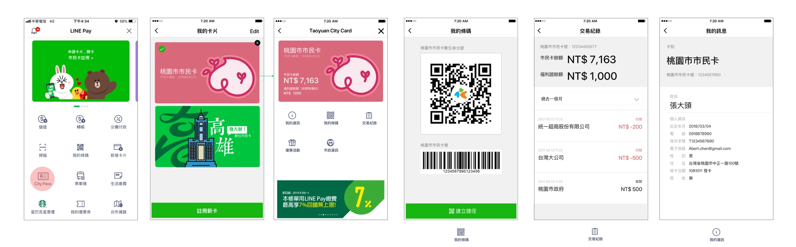

背景與挑戰
傳統市民卡在實體或早期數位化的脈絡下存在明顯的使用痛點：
- 使用者需隨身攜帶實體卡片，遺失或忘帶的成本高
- 查詢餘額與交易紀錄的流程分散，操作步驟多
- 在趕時間的場景（如排隊、進出站）下，難以快速找到正確畫面出示
- 系統要求使用者理解法規與專有名詞，學習門檻高

設計策略
卡片脈絡的功能入口
將市民卡放在「卡片/票證」的脈絡中而非支付流程內，讓使用者直覺認知為身分證件，降低操作錯誤率。
任務導向的功能分離
清楚區分三大核心功能：條碼/QR Code 出示、交易紀錄查詢、個人卡片資訊。每個畫面聚焦完成一項任務。
高對比低干擾設計
條碼/QR Code 畫面採用克制的視覺元素，主要操作按鈕固定於底部，排除會干擾掃描的多餘資訊。
可快速掃視的交易紀錄
交易紀錄以顏色區分收支、清楚的時間與商家分類，預設顯示近期資料，支援快速掃視而非逐行閱讀。

設計價值
這個專案的核心思維是「脈絡決定理解」—
同樣的功能放在不同的框架下，使用者的理解和操作方式會完全不同。
透過將市民卡從「支付工具」重新定位為「身分票證」，大幅降低了使用者的心智模型切換成本，讓數位化不只是把實體卡搬到手機上，而是真正改善了使用體驗。